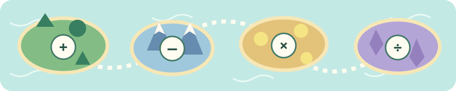

A LITTLE RUN. A LOT OF DISCOVERY.
Math
Runner
Explore four islands. Jump along the trail. Solve maths to reach the next checkpoint.
Your maths islands
Choose an island to explore

10 questions per run
★ 0 first tries
Best: —
Jump over logs and collect trail coins.
● 0
Ready to explore?
2 × 3 = ?
Take your time. Every step counts.
Answer with keys 1–3 or tap a gate. Each correct answer opens the next part of the trail.
Choose your table, then start!
Tap an answer, or use keys 1, 2, and 3. Practice mode lets you think for as long as you need.
Your best score stays in this browser. First-try stars celebrate what you know; corrections help you learn.